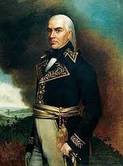
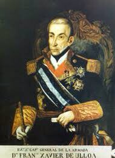

Los Hilos de Monik
Gobernadores y Capitanes Generales en Cuba
Publicado el 22 de agosto de 2020 - 19 tweets - Hilo original en Twitter
1
En el período colonial, Cuba tuvo un total de 133 gobernadores y Capitanes Generales.
¿Qué sabemos de estos hombres? ¿Qué pasó de relevante en Cuba durante su mandato?
Hoy les traigo (brevemente) a los de la primera mitad del siglo XIX. ¿Por qué? Pues es mi época preferida.
2
1799-1812: Salvador de Muro y Salazar, Marqués de Someruelos.
Se le considera el CG que por más tiempo ocupó este rol en Cuba: 13 años
- Cuando Humboldt visitó a Cuba, como Pdte de la Sociedad Patriótica, le pidió revisara las colinas de La Habana en busca de oro. No había 😬
3
- Fundación del Cementerio Espada
- Programa de vacunación contra la viruela, diseñado y supervisado por el Dr. Tomás Romay
- Manejó la crisis económica provocada por el embargo estadounidense a Cuba en 1807
- Suprimió con gran violencia la conspiración de Aponte
4
1812-1816: Juan Ruiz de Apodaca, conde de Venadito
Marino, Embajador en Inglaterra y antepenúltimo Virrey de Nueva España. Fue CG de Cuba y Florida.
- Constitución de Cadiz de 1812
- Establecimiento de la libertad de prensa en Cuba
- Cesión de la Florida a los EE.UU.
5
1816-1819: José María Cienfuegos Jovellanos
- Evidentemente... fundación de Cienfuegos. También de otras ciudades: Mariel, Guantánamo y Nuevitas
- Fundación del 1er Jardín Botánico
- Fuerte campaña contra los piratas

6
1819: Juan Maria Echeverri
Se le conoce más por haber sido el último gobernador de Yucatán (1821)
Fue gobernador por un tiempo muy breve, y ni retrato encontré
7
1819-1821: Juan Manuel de Cajigal y Martínez
Fue jefe del ejército realista en la Guerra de Independencia de Venezuela.
Una serie de motines en Cuba lo obligan a implantar la nueva Constitución liberal promulgada en España por Fernando VII.
Muere en Guanabacoa en 1823.
8
1821-1822: Nicolás de Mahy y Romo
En 1821, Varela inauguró en el Seminario de San Carlos, lo que resultó ser la primera Cátedra de Derecho de América Latina
Mahy murió en el cargo, en 1822
9
1822-1823: Sebastián Kindelán y Oregón (gobernador provisional)
Fue gobernador de Santiago de Cuba en la época de la Revolución de Haiti y se le considera el responsable de alentar la migración de los colonos franceses a Cuba.
Muere en Stgo de Cuba en 1826.
10
1823-1832: Francisco Dionisio Vives, Conde Cuba
General, Embajador ante EE.UU.
- Enfrentó las conspiraciones de Soles y Rayos de Bolívar y del Águila Negra.
- Favoreció la expansión azucarera. Abrió el 1er manicomio y el 1er hospital para parturientas en Cuba.
11
1832-1834: Mariano Ricafort Palacín y Abarca
Fue CG en Filipinas, Cuba, Galicia, Andalucía y Aragón. Combatió en las guerras de independencia de Venezuela y Peru.
Durante su tiempo en Cuba, el mayor desafío fue una gran epidemia de cólera morbo que diezmó a la población.
12
1834-1838: Miguel Tacón y Rosique (¿a que de este sí te acuerdas?)
Marqués (luego Duque) de la Unión
Se le conoce por las muchas obras públicas potenciadas de conjunto con el Intendente Claudio Martínez de Pinillos.
Pero también se le consideró un déspota, que fomentó...
13
...el comercio ilegal de esclavos.
Su descendiente, Rocío Regina Bernaldonde Quirós y Coca, es la duquesa de la Unión de Cuba desde 1983. Además, Marquesa de Bayamo. ¡Qué caché!
Tacón hizo mucho, pero lleva hilo para él solito.
14
1838-1840: Joaquín Ezpeleta Enrile.
Hijo del Gobernador de Cuba José Manuel de Ezpeleta. Fue hecho prisionero en las guerras napoleónicas.
- Durante su mandato el ferrocarril llegó a Güines
15
1840-1841: Pedro de Alcántara Téllez-Girón y Pimentel, príncipe de Anglona.
Fue director del Museo del Prado entre 1820-1823.
- Fundación del Archivo Nacional de Cuba.
- Revista Repertorio Médico Habanero, primera publicación dedicada a las ciencias médicas en Cuba
16
1841-1843: Gerónimo Valdés
Fue Ministro de Guerra en España en 1834. Se le considera el asturiano más importante del siglo XIX.
- Emitió el Reglamento de Esclavos, primera disposición legal para contener los abusos de los amos en Cuba
17
1843: Francisco Javier de Ulloa (gobernador provisional por un mes)
Participó en la Batalla de Trafalgar, fue CG de la Real Armada Española y Ministro de Marina.
18
1843-1848: Leopoldo O’Donnell, duque de Tetúan
Fue Ministro de Guerra, de Estado, de Marina y de Ultramar.
- Represión de la Conspiración de la Escalera
- Autorizó torturas de la época de la Inquisición
- Fundación del Liceo Artístico y Literario de La Habana
19
1848-1850: Federico Roncali Ceruti
Fue Primer Ministro en España
- El Faro Roncali, en el Cabo de San Antonio, lleva su nombre
- Amigo de Narciso López, evitó que lo arrestaran cuando la fallida Conspiración de la Mina de la Rosa Cubana